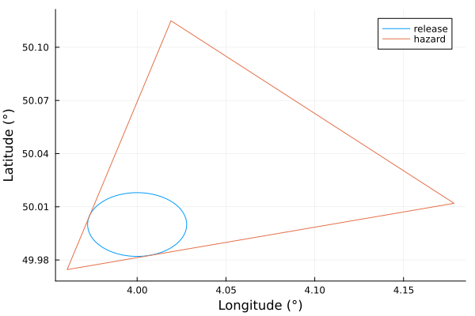

ATP45
ATP45 implements the NATO ATP-45 impact assessment model for CBRN-type incidents.
Getting started
Run ATP-45:
The package provides a simple and flexible API to run the proper ATP-45 case, according to the parameters and inputs provided by the user. Setting up the simplified ATP-45 model in case of chemical agents goes like this:
using ATP45
simple_chem = (ChemicalAgent(), ChemicalWeapon(), Simplified())ATP45 categories with ids:
- chem
- chem_weapon
- simplifiedAfter defining the desired categories of ATP-45, we define the location of the release at longitude 4.0 and latitude 50.0, as well as a wind of speed 5.0 m/s and pointing 45° from North:
release = ReleaseLocations([4., 50.]);
wind = WindAzimuth(5., 45.);We finally pass these as arguments to the run_atp function. This function takes as arguments an arbitrary number of categories and inputs, so the splat operator (...) needs to be used on the simple_chem tuple.
result = run_atp(simple_chem..., release, wind)Atp45Result with 2 zones and properties:
Dict{Symbol, Any} with 3 entries:
:locations => ReleaseLocations{1, Float64}(((4.0, 50.0),))
:categories => (ChemicalAgent(), ChemicalWeapon(), Simplified())
:weather => (WindAzimuth(5.0, 45.0),)The result can be easily plotted with Plots.jl:
using Plots
plot(result)
We can also use the string id's corresponding to the categories instead of the Julia objects:
using ATP45
run_atp("detailed", "chem", "chem_weapon", "typeA", ATP45.Shell(), "stable", wind, release)Atp45Result with 2 zones and properties:
Dict{Symbol, Any} with 3 entries:
:locations => ReleaseLocations{1, Float64}(((4.0, 50.0),))
:categories => (ChemicalAgent(), ChemicalWeapon(), ReleaseTypeA(), Shell(), D…
:weather => (Stable(), WindAzimuth(5.0, 45.0))The id's and their corresponding objects can be seen with ATP45.map_ids:
ATP45.map_ids()Dict{String, Any} with 45 entries:
"chem" => ChemicalAgent()
"MNE" => Mine()
"stable" => Stable()
"typeB" => ReleaseTypeB()
"containergroupd" => ContainerGroup(:ContainerGroupD, AbstractContainerType[S…
"containergroupb" => ContainerGroup(:ContainerGroupB, AbstractContainerType[B…
"med" => ReleaseMedium()
"BML" => Bomblet()
"neutral" => Neutral()
"bio" => BiologicalAgent()
"ARKT" => AirRocket()
"xlarge" => ReleaseExtraLarge()
"chem_sub" => ChemicalSubstance()
"typeC" => ReleaseTypeC()
"subtype2" => SubType2()
"containergroupc" => ContainerGroup(:ContainerGroupC, AbstractContainerType[B…
"SRKT" => SurfaceRocket()
"detailed" => Detailed()
"bloodAgent" => ReleaseBloodAgent()
⋮ => ⋮We can have more details about each categories defined in ATP-45 with the ATP45.properties method:
ATP45.properties("typeA")(id = "typeA", longname = "Air Contaminating Attack", description = "Release following an attack with an air contaminating (non-persistent) chemical agent.", paramtype = "category", internalname = "ReleaseTypeA")If some categories or some inputs are missing, you should get an explanatory error about what's missing:
julia> run_atp("detailed", "chem", "chem_weapon", "typeA", ATP45.Shell(), wind, release)ERROR: Some inputs are missing: The model requires a stability class. Example: `Unstable()`
Implementation of GeoInterface.jl
The Atp45Result type implements the GeoInterface.jl interface, which means that the coordinates of the ATP-45 zones can be accessed with the GeoInterface.jl methods:
using GeoInterface
result = run_atp("chem", "chem_weapon", "simplified", wind, release)
GeoInterface.coordinates(result)2-element Vector{Vector{Vector{Vector{Float64}}}}:
[[[4.0, 50.0179808838871], [4.001752234952472, 50.01794538954903], [4.003497546915963, 50.017839046769936], [4.0052290403452595, 50.01766227569944], [4.006939874472461, 50.01741577473609], [4.00862329042049, 50.01710051775909], [4.010272637987785, 50.01671775026818], [4.0118814019966695, 50.01626898444736], [4.013443228099797, 50.01575599317202], [4.014951947941381, 50.01518080298386] … [3.9850480520586147, 50.01518080298386], [3.986556771900203, 50.01575599317202], [3.9881185980033305, 50.01626898444736], [3.9897273620122156, 50.01671775026818], [3.99137670957951, 50.01710051775909], [3.993060125527539, 50.017415774736094], [3.9947709596547396, 50.01766227569944], [3.996502453084038, 50.017839046769936], [3.9982477650475277, 50.01794538954903], [4.0, 50.0179808838871]]]
[[[3.9605703848208336, 49.974564392595354], [4.019067882355443, 50.114934298719916], [4.178419720202626, 50.01197626526179], [3.9605703848208336, 49.974564392595354]]]It also means that the result can be easily converted to GeoJSON:
using GeoJSON
GeoJSON.write(result)"{\"type\":\"FeatureCollection\",\"features\":[{\"type\":\"Feature\",\"geometry\":{\"type\":\"Polygon\",\"coordinates\":[[[4.0,50.0179808838871],[4.001752234952472,50.01794538954903],[4.003497546915963,50.017839046769936],[4.0052290403452595,50.01766227569944],[4.006939874472461,50.017415" ⋯ 3944 bytes ⋯ "202626,50.01197626526179],[3.9605703848208336,49.974564392595354]]]},\"properties\":{\"type\":\"hazard\"},\"bbox\":[3.9605703848208336,49.974564392595354,4.178419720202626,50.114934298719916]}],\"bbox\":[3.9605703848208336,49.974564392595354,4.178419720202626,50.114934298719916]}"Documentation
ATP45.run_atp — Functionrun_atp(args...)High level function to run the ATP-45 procedure. The arguments args can be pretty flexible. They can be expressed as :
- categories and input types from
ATP45.jl
locations = ReleaseLocations([4., 50.])
wind = WindAzimuth(2.5, 45.)
run_atp(Simplified(), ChemicalAgent(), ChemicalWeapon(), locations, wind)- string corresponding to the categories' id's. See
map_idsto know the id's of the existing categories:
run_atp("simplified", "chem", "chem_weapon", locations, wind)- a combination of both:
run_atp(Simplified(), "chem", "chem_weapon", locations, wind)ATP45.ReleaseLocations — TypeReleaseLocations{N, T}Represents the N locations of the release(s).
Examples
julia> coords = [
[6., 49.],
[6., 51.],
]
julia> ReleaseLocations(coords)
ReleaseLocations{2, Float64}(((6.0, 49.0), (6.0, 51.0)))ATP45.WindAzimuth — TypeWindAzimuth(speed, azimuth) <: AbstractWindDefines the wind with its speed in m/s and its azimuth in degrees (with North as reference).
ATP45.WindVector — TypeWindVector(u, v) <: AbstractWindDefines the wind with its horizontal coordinates. u is W-E and v is S-N.
ATP45.Atp45Result — TypeAtp45ResultCollection of zones representing the result of an ATP-45 procedure result. Also contains relevant information about the input conditions. It implements the GeoInterface.FeatureCollection trait. The properties can be accessed with ATP45.properties.
Examples
This is the output type of run_atp:
result = run_atp("chem", "chem_weapon","simplified", WindAzimuth(2., 90.), ReleaseLocations([4., 50.]))
# output
Atp45Result with 2 zones and properties:
Dict{Symbol, Any} with 3 entries:
:locations => ReleaseLocations{1, Float64}(((4.0, 50.0),))
:categories => (ChemicalAgent(), ChemicalWeapon(), Simplified())
:weather => (WindAzimuth(2.0, 90.0),)Specific zones can be access with the get_zones function:
get_zones(result, "release")
# output
1-element Vector{ATP45.AbstractZoneFeature}:
ATP45.ReleaseZone{100, Float64}(ATP45.CircleLikeZone{100, Float64}(ReleaseLocations{1, Float64}(((4.0, 50.0),)), 2000.0))ATP45.map_ids — Functionmap_ids()Dictionnary mapping the existing id's to the ATP45.jl categories.
Examples:
julia> ATP45.map_ids()
Dict{String, Any} with 29 entries:
"MPL" => MissilesPayload()
"MSL" => Missile()
"chem" => Chemical()
"typeC" => ReleaseTypeC()
"MNE" => Mine()
⋮ => ⋮